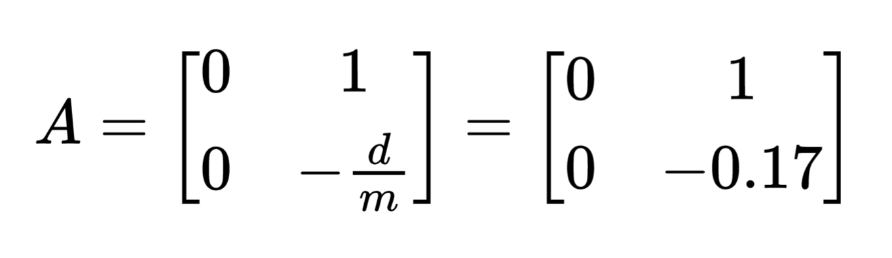
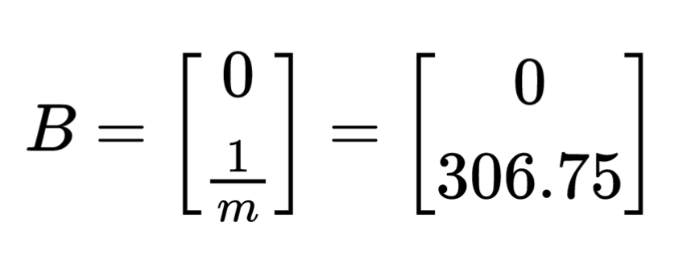
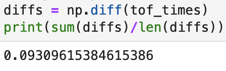
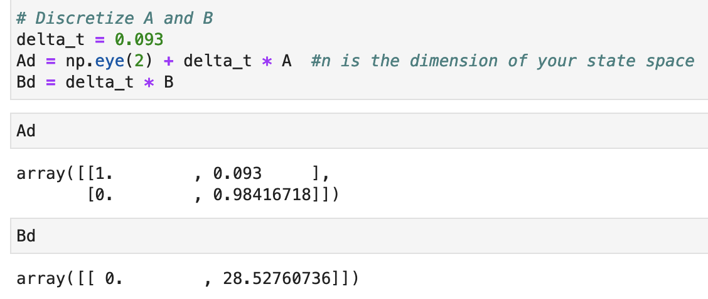
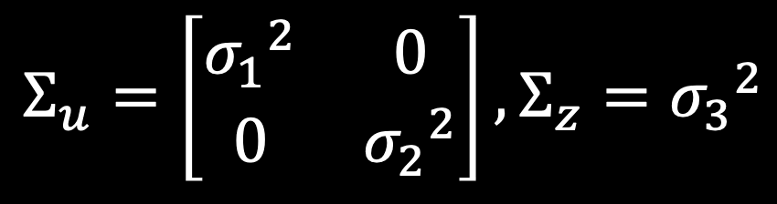
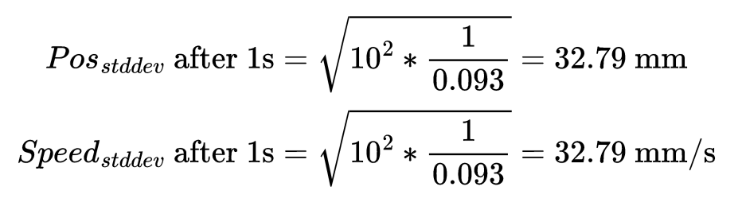
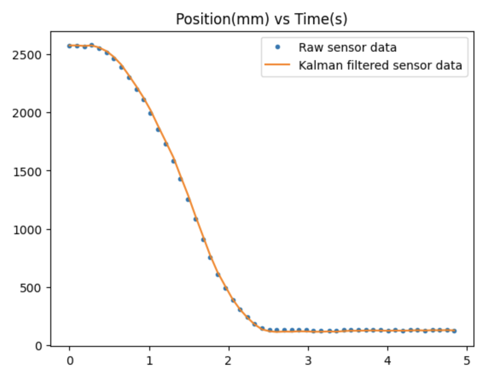
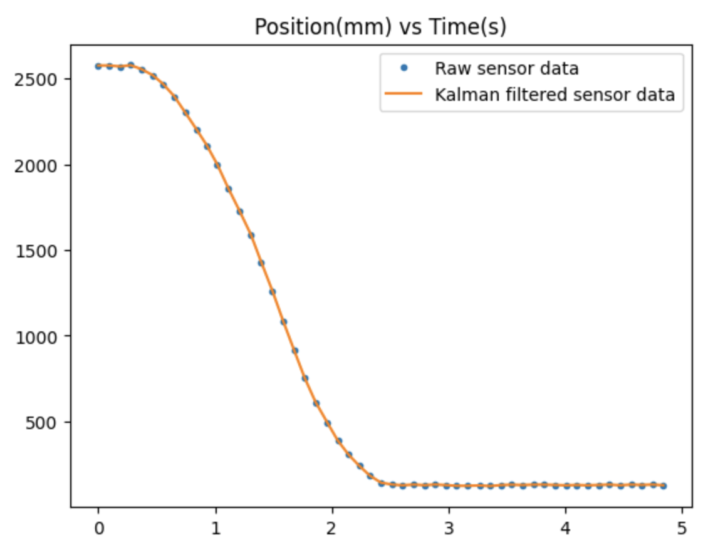
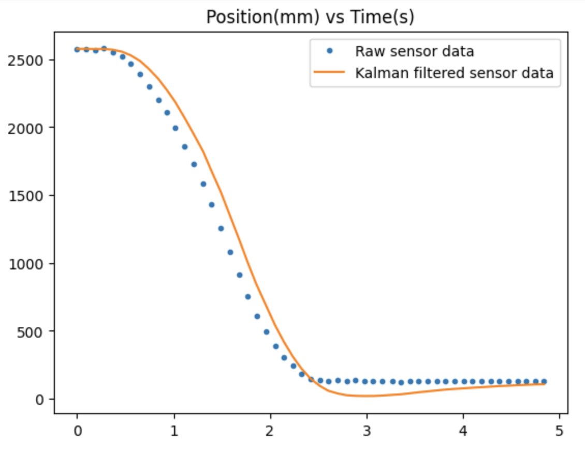
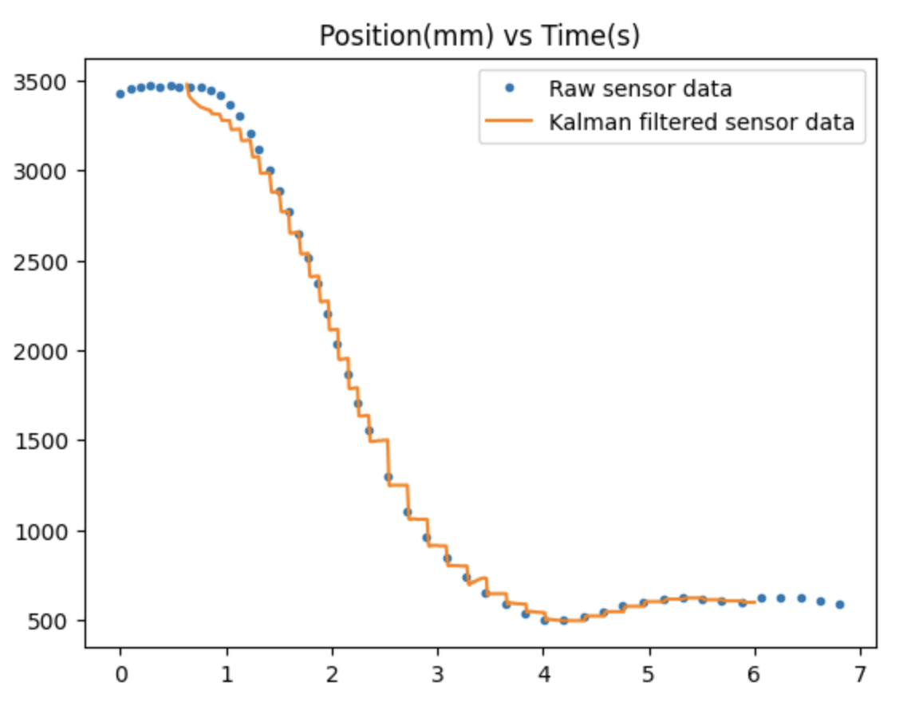

Lab 7: Kalman Filter
In this lab, I implemented a Kalman filter for my robot. The Kalman filter supplements sampled ToF sensor values in order to achieve more granular data, which can be use to execute more precise movement control. The goal is to find the optimal combination of ToF data and position prediction based on pwm input to find the most precise estimate of the robot's actual position. With this increased control, the robot will be able to speed more quickly towards the wall while still stopping at precisely the 1 ft setpoint distance.
 In this model, let's define matrix A as the square matrix with the -d/m term, and matrix B as the [0, 1/m] matrix.
These matrices involve the d and m coefficients, which represent the drag and momentum of the robot as it moves.
The equations for d and m are as follows:
In this model, let's define matrix A as the square matrix with the -d/m term, and matrix B as the [0, 1/m] matrix.
These matrices involve the d and m coefficients, which represent the drag and momentum of the robot as it moves.
The equations for d and m are as follows:
 In order to find the values of drag and momentum for my robot, I triggered a step response and measured the ToF sensor readings and PWM
input as the robot moved. I drove the robot at a PWM of 120, since that was the approximate speed it drove during PID in the previous lab.
I then plotted graphs of the position (u), pwm, and velocity (x') of the robot:
In order to find the values of drag and momentum for my robot, I triggered a step response and measured the ToF sensor readings and PWM
input as the robot moved. I drove the robot at a PWM of 120, since that was the approximate speed it drove during PID in the previous lab.
I then plotted graphs of the position (u), pwm, and velocity (x') of the robot:


From these graphs, I can determine the steady state velocity, which is the (peak) velocity at which the robot stops accelerating, and the 90% rise time, which is the time it takes to reach 90% of the steady state velocity.
Steady state velocity (ẋ) = 1800 mm/s
90% rise time (t0.9) = 1.5 s
Using the above values, drag and mass can next be calculated. In the drag equation, the value of u is assumed to be 1 in accordance with the lecture. As a result, we get that d = 0.000555, and m = 0.00326.
Drag (d) = u / ẋ = 1 / 1800 = 0.000555
Mass (m) = -dt0.9 / ln(1-0.9) = -0.0005 * 1.5 / ln(1-0.9) = 0.00326
The calculated values for drag and mass are plugged to the A and B matrices from our Kalman filter equations, resulting in the matrices below.
 
To discretize my A and B matrices, I first determined the sampling rate by finding the average
difference between TOF sample timestamps. I found the Δt to be 0.093 seconds.

Using this Δt value, I implemented the following code from the lab manual to discretize the A and B matrices.

The C matrix used in my Kalman filter is the one given in class. Since we are only measuring the
negative distance from the wall, the position corresponding to velocity in the matrix is 0.
C = np.array([[-1, 0]])
x = np.array([[-tof_data[0]],[0]])
Lastly, the Kalman filter requires calculation of the process noise and sensor noise matrices. The process noise matrix, Σu, has two covariance values σ1 and σ2. The sensor noise matrix, Σz, has one covariance value σ3.
Using the same sampling rate that I calculated to discretize the A and B matrices, I can calculate σ1 and σ2 with the following equations:
Taking σ3 to be 20mm, as suggested in the lecture, I now have all 3 covariance values needed to generate my noise matrices.
(Correction: The second matrix should be Σz, not Σu. Sorry about that!)
I graphed the generated array of Kalman-filtered data along with the raw TOF sensor readings. With a σ3 value of 20, the filtered data appeared very similar to the raw data but slighly higher at some points.
With a σ3 value of 10, the fit was even more exact, making the effect of the Kalman filter unnoticable.

Lastly, if I increase σ3 to 100, placing much greater value on the predicted position data over sensor readings,
the filtered data shifts far away from the raw TOF data, as expected.

In my code, which is inspired by Anya's code, I used the BasicLinearAlgebra Arduino library to help with matrix operations.
Here is a video demo of my robot running PID control using the Kalman filter data:
I found that the parameters used earlier in my Python code worked well for my robot, and playing around with the σ values either caused the motors to move unexpectedly/stall or caused the filtered data to be too close to the raw data. Thus, I stuck with the parameters I calculated earlier and generated the following graph from my PID run with Kalman filtered data.
